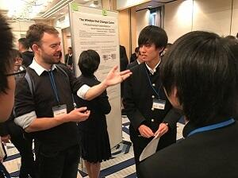
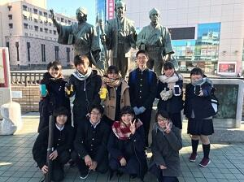
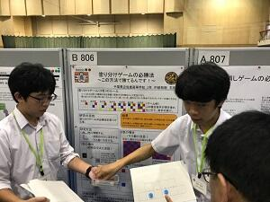
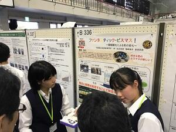
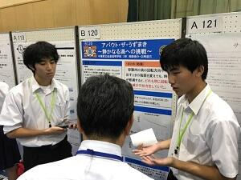
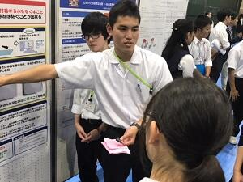
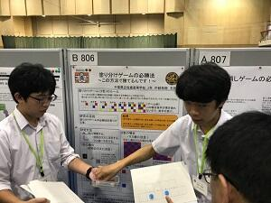
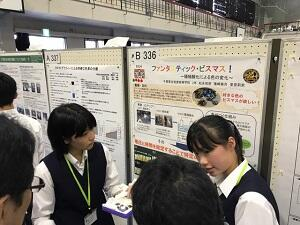
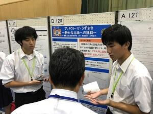
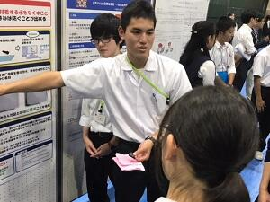

文字
背景
行間


カテゴリ:発表会
 令和３年度千葉県高等学校課題研究発表会が行われました。
令和３年度千葉県高等学校課題研究発表会が行われました。
ＳＳＨコンソーシアム千葉、千葉サイエンススクールネット事務局が主催し、県内ＳＳＨ指定校及び理数科設置校が、ビデオ会議ツール「Google Meet」を利用して、オンラインで発表参加しました。


生徒にとって、他校の発表を視聴し刺激を受け、課題研究の活性化が図れたのではないでしょうか。
第１会場 物理
令和３年度ＳＳＨ理数科課題研究発表会（御案内）
令和３年度 ＳＳＨ理数科課題研究発表会・普通科課題研究発表会の開催について（御案内）
１ 日 時 令和４年２月２日（水）
午前の部 ９時００分から１１時４０分
午後の部 １時００分から ２時４０分
２ 内 容 午前の部 対面形式の発表となります。
⑴ 本校に御来校いただき、生徒の発表を各会場にて御参観ください。
⑵ 受付は８：３０～９：３０ 本館昇降口にて行います。
⑶ 受付後、自由に御参観ください。会場図・発表要旨集等は受付でお渡しします。お帰りいただく時間は自由です。
⑷ １・２年生（ＳＳＨ理数科及び普通科）の全発表班（約１６０班）が各会場に分かれて、スライドを使用した発表を行います。（各会場８班、２１会場を予定）
⑸ 各班発表時間７分、質疑応答７分で実施します。
⑹ 別添の「健康チェックシート」に記入の上、当日、御持参ください。
午後の部 オンライン形式の発表となります。
⑴ ＳＳＨ理数科課題研究（代表２班）・普通科課題研究（代表２班）の発表の様子をＷｅｂ会議ツールＺｏｏｍを用いて中継します。
⑵ 冒頭に探究学習部長より、本校の探究学習の取組について御説明いたします。
⑶ Ｚｏｏｍからの入退室は自由です。
⑷ 各班発表時間７分、質疑応答１０分で実施します。
【日程】 １３：００～１３：１５ 校長挨拶
本校の探究学習の取組（探究学習部長）
午前の部の発表の様子の紹介
１３：２０～１３：３５ 普通科代表班発表①
１３：３５～１３：５０ 普通科代表班発表② (英語による発表)
（休憩１０分）
１４：００～１４：２０ ＳＳＨ理数科代表班発表①
１４：２０～１４：４０ ＳＳＨ理数科代表班発表②
１４：４０～ 諸連絡等
３ 参加申込み
⑴ 下記ＵＲＬのGoogleフォームに必要事項を入力し、参加申込みをお願いいたします。
⑵ 参加は「午前の部」又は「午後の部」どちらかに各校・各機関１名でお願いします。
⑶ 追加の連絡事項がある場合は御登録いただいたメールアドレスに送信いたします。
⑷ 午後の部に参加される方には、前日までに、御登録いただいメールアドレスに招待ＵＲＬ・
ミーティングＩＤ・パスワードを送信いたします。
申込み締切り 令和４年１月２６日（水）
https://forms.gle/S5fEKL4Q1cwZGXYd9
４ その他
新型コロナウイルス感染症の拡大状況により、予定を変更する場合がございます。その際は、
御登録いただいたメールアドレスを通じて連絡いたします。
SSH生徒研究発表会（神戸）
8月4日（水）神戸国際展示場で行われたスーパーサイエンスハイスクール(SSH)生徒研究発表会に本校理数科3年生の西尾・中島・福井が参加し、「垂直軸水車を用いた潮流発電の効率化」という題でポスター発表をしました。感染症対策が徹底されており、飛沫防止シートによりポスターが見づらい状況となっておりましたが、生徒は説明用の水車をその場で紙を使って手作りするなど、より伝わりやすい工夫をしながら柔軟に対応し、発表を重ねるごとに生徒の成長が感じられました。また、全国のSSH校で行われている優れた研究発表に、生徒は目を輝かせながら聞き入り、互いの研究の話に花を咲かせながら活発な議論を行っていました。この経験が将来きっと活きてくることでしょう。


千葉県科学研究発表会
研究テーマは以下の通り。
物理部門：「集音レンズを用いた新たな通信機器の開発」
化学部門：「ビスマス極板を用いた電気分解における色の変化と条件」


第13回高校生理科研究発表会


ＳＳＨ生徒研究発表会 ＩＮ 神戸
千葉県課題研究会に参加しました
午前は、分科会形式での口頭発表、午後はポスター発表でした。本校からは、口頭発表部門の物理、化学、生物、地学、数学の５分野に各１組ずつが参加し、日ごろの課題研究の成果を発表しました。
また、ポスター発表では、口頭発表の５分野に加え、ＳＧＨ分野にも参加ました。物理分野に８組、化学分野に２組、生物分野に６組、地学分野に１組、数学分野に１組の１８組、ＳＧＨ分野に３組の計２１組が研究の成果を発表しました。ＳＧＨ分野は、今年度初めて設けられた分野で、本校から参加した３組の１年生は、いずれも丁寧に研究の内容を紹介していました。


SS課題研究Ⅱ口頭発表会


英語による高校生科学研究発表会
12月9日、茨城県立緑岡高校主催の英語による科学研究発表会に参加してきました。
来月に計画されている海外研修(理数科2年全員シンガポールにて研修)の事前指導の一環として理数科2年生10名で水戸を訪れました。
茨城県内はもちろん、関東近県や遠くは岡山県からの参加もあり、活気あふれる発表会で、各自いろいろな事を学び、感じ、自分たちの研修のモチベーションアップに繋がったようです。

第11回 高校生理科研究発表会
年度当初に希望した物理分野6テーマ、化学分野6テーマ、生物分野5テーマ、数学分野1テーマ計18テーマに分かれ、夏休みや休日を返上して実験・観察を繰り返し、初めてポスターを作成し校外での発表会に臨みました。2時間の発表時間が「あっという間だった」という発言が多く聞かれ、発表を聞いて貰える喜びを感じたようです。また、中間発表的だったにも関わらず、数学分野では優秀賞を受賞することが出来ました。

 
